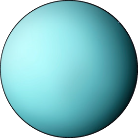
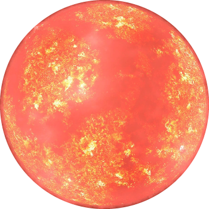
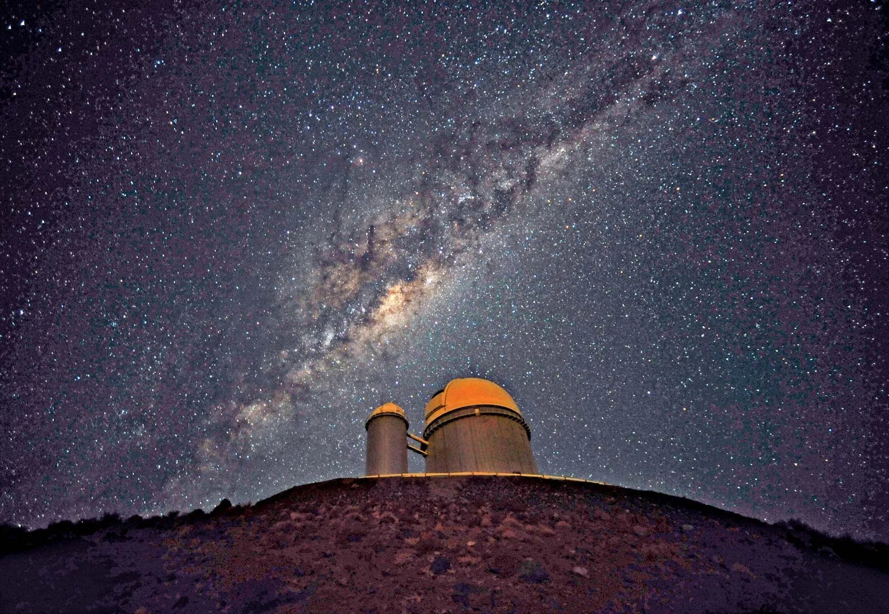
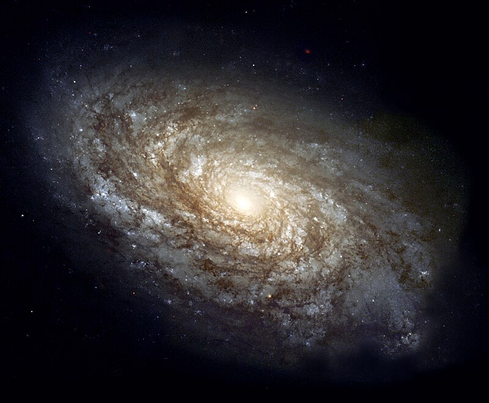

Mercury
- Discovery: Known since ancient times, but credited to be discovered by telescope observations by Galileo Galilei in the 17th century.
- Size: Mercury has a diameter of about 4,880 kilometers (3,032 miles), making it the smallest planet in the solar system.
- Atmosphere: Very thin and composed mostly of oxygen, sodium, hydrogen, helium, and potassium.
- Distance from the Sun: Approximately 57.9 million kilometers (36 million miles).
- Other Details: It has extreme temperature variations, ranging from very hot during the day to extremely cold at night due to its lack of atmosphere.
Venus
- Discovery: Known since ancient times.
- Size: Similar in size to Earth, with a diameter of about 12,104 kilometers (7,521 miles).
- Atmosphere: Mostly carbon dioxide with clouds of sulfuric acid, creating a thick and toxic atmosphere.
- Distance from the Sun: Roughly 108.2 million kilometers (67.2 million miles).
- Other Details: Surface temperature high enough to melt lead; experiences a runaway greenhouse effect.
Earth
- Discovery: Obviously, Earth is our home planet and has been known to humans for as long as humans have existed.
- Size: Earth has a diameter of about 12,742 kilometers (7,918 miles).
- Atmosphere: Composed mainly of nitrogen and oxygen, supporting life.
- Distance from the Sun: Approximately 149.6 million kilometers (92.9 million miles).
- Other Details: The only known planet to support life, with diverse ecosystems and liquid water on its surface.
Mars
- Discovery: Known since ancient times.
- Size: Diameter of about 6,779 kilometers (4,212 miles).
- Atmosphere: Thin atmosphere primarily composed of carbon dioxide with traces of nitrogen and argon.
- Distance from the Sun: Roughly 227.9 million kilometers (141.6 million miles).
- Other Details: Has polar ice caps and evidence of past water; ongoing exploration missions for potential colonization.
Jupiter
- Discovery: Known since ancient times.
- Size: Largest planet in the solar system with a diameter of about 139,820 kilometers (86,881 miles).
- Atmosphere: Primarily hydrogen and helium, with swirling bands of clouds and the iconic Great Red Spot.
- Distance from the Sun: Approximately 778.5 million kilometers (484 million miles).
- Other Details: Numerous moons and a powerful magnetic field.
Saturn
- Discovery: Known since ancient times.
- Size: Diameter of about 116,460 kilometers (72,366 miles).
- Atmosphere: Predominantly hydrogen and helium, with beautiful rings made of ice and dust particles.
- Distance from the Sun: Roughly 1.4 billion kilometers (886 million miles).
- Other Details: Extensive ring system is its most prominent feature.

Uranus
- Discovery: Discovered by William Herschel in 1781.
- Size: Diameter of about 50,724 kilometers (31,518 miles).
- Atmosphere: Mainly hydrogen and helium, with traces of methane giving it a blue-green color.
- Distance from the Sun: Approximately 2.9 billion kilometers (1.8 billion miles).
- Other Details: Rotates on its side, possibly due to a past collision.
Neptune
- Discovery: Discovered by Johann Galle and Urbain Le Verrier in 1846.
- Size: Diameter of about 49,244 kilometers (30,598 miles).
- Atmosphere: Composed mostly of hydrogen, helium, and methane, giving it a blue appearance.
- Distance from the Sun: Roughly 4.5 billion kilometers (2.8 billion miles).
- Other Details: winds and a series of dark spots on its surface.
Pluto
- Discovery: Discovered by Clyde Tombaugh in 1930.
- Size: Diameter of about 2,377 kilometers (1,477 miles).
- Atmosphere: Thin atmosphere mainly composed of nitrogen, with traces of methane and carbon monoxide.
- Distance from the Sun: On average, about 5.9 billion kilometers (3.7 billion miles) away from the Sun.
- Other Details: Five known moons; reclassified as a dwarf planet by the IAU in 2006.
Mercury
Specification
- Discovery: Known since ancient times, but credited to be discovered by telescope observations by Galileo Galilei in the 17th century.
- Size: Mercury has a diameter of about 4,880 kilometers (3,032 miles), making it the smallest planet in the solar system.
- Atmosphere: Very thin and composed mostly of oxygen, sodium, hydrogen, helium, and potassium.
- Distance from the Sun: Approximately 57.9 million kilometers (36 million miles).
- Other Details: It has extreme temperature variations, ranging from very hot during the day to extremely cold at night due to its lack of atmosphere.
Mauna Kea Observatory
Specification:
"The Mauna Kea Observatory, situated in Hawaii, is renowned for its high-altitude location at 13,796 feet, offering exceptional astronomical conditions. Home to numerous telescopes, its clear, dark skies provide unparalleled views of celestial phenomena, making it a prime destination for astronomers worldwide."
Aldebaran
- Discovery: Known since ancient times.
- Size: Around 44 times larger than the Sun.
- Atmosphere: Red giant star with an outer atmosphere cooler than the Sun.
- Distance: Located about 65 light-years away from Earth.
- Other Details: Forms the eye of the Taurus constellation.

Alpha Centauri A
- Discovery: Discovered in 1839 by Scottish astronomer Thomas Henderson.
- Size: Slightly larger and more massive than the Sun.
- Atmosphere: Yellow main-sequence star similar to our Sun.
- Distance: Located about 4.37 light-years away from the Sun.
- Other Details: Forms the Alpha Centauri system with Alpha Centauri B and Proxima Centauri.
Alpha Centauri B
- Discovery: Discovered as part of the Alpha Centauri star system.
- Size: Alpha Centauri B is a K-type main-sequence star, slightly smaller and cooler than the Sun.
- Atmosphere: It has an atmosphere like that of many other stars.
- Distance: Approximately 4.37 light-years away from Earth, part of the closest star system to our solar system.
- Other Details: It orbits closely with Alpha Centauri A and Proxima Centauri, forming the Alpha Centauri star system.

Proxima Centauri
- Discovery: Discovered in 1915 by Robert Innes.
- Size: Proxima Centauri is a small red dwarf star.
- Atmosphere: Known for its intense stellar flares.
- Distance: Closest known star to the Sun, located about 4.24 light-years away in the Alpha Centauri star system.
- Other Details: Classified as a flare star, its proximity to Earth makes it an important target for scientific research.
Arcturus
- Discovery: Known to ancient astronomers.
- Size: It is a red giant star, one of the brightest stars in the sky, larger and brighter than the Sun.
- Atmosphere: Its atmosphere is composed mainly of hydrogen and helium.
- Distance: Approximately 36.7 light-years away from Earth.
- Other Details: Arcturus is visible in the northern hemisphere and is part of the constellation Bootes.

Betelgeuse
- Discovery: Not precisely known.
- Size: It is a red supergiant, one of the largest stars known, approximately 950–1,200 times larger than the Sun.
- Atmosphere: Rich in heavy elements and characterized by a complex atmosphere.
- Distance: Approximately 643 light-years away from Earth.
- Other Details: Betelgeuse is located in the constellation of Orion and is visibly bright, part of the famous Orion's belt.
Deneb
- Discovery: Not precisely known.
- Size: It is a supergiant star, one of the largest known stars, roughly 200,000 times brighter than the Sun.
- Atmosphere: Classified as a white supergiant, possessing a surface temperature of about 8,525 K.
- Distance: Approximately 2,600 light-years away from Earth.
- Other Details: Deneb is part of the Northern Cross constellation, Cygnus, and is one of the vertices of the Summer Triangle asterism.
Polaris
- Discovery: Known for centuries as it's easily visible to the naked eye.
- Size: Classified as a Cepheid variable star, about 46 times the size of the Sun.
- Atmosphere: Identified as a yellow-white supergiant, with a surface temperature of approximately 6,000 K.
- Distance: Roughly 433 light-years away from Earth.
- Other Details: Polaris is famously known as the North Star and serves as a guiding point for navigation due to its proximity to the celestial North Pole.
Rigel
- Discovery: Known since ancient times due to its brightness and visibility.
- Size: A blue supergiant, around 78 times larger than the Sun.
- Atmosphere: Classified as a young star with a surface temperature of roughly 12,100 K.
- Distance: Located about 860 light-years away from Earth.
- Other Details: Rigel is part of the Orion constellation and is one of the brightest stars in the night sky.
Sirius
- Discovery: Known to ancient civilizations due to its brightness.
- Size: A binary star system comprising Sirius A (about twice the size of the Sun) and Sirius B (a white dwarf).
- Atmosphere: Sirius A is a main-sequence star with a surface temperature of approximately 9,940 K.
- Distance: Located roughly 8.6 light-years away from Earth.
- Other Details: Often referred to as the "Dog Star" and is the brightest star visible from Earth.
Vega
- Discovery: Known for centuries and is one of the brightest stars in the sky.
- Size: A white main-sequence star, around 2.1 times larger than the Sun.
- Atmosphere: Vega has a surface temperature of about 9,600 K.
- Distance: Positioned approximately 25 light-years away from Earth.
- Other Details: Vega is the brightest star in the constellation of Lyra and plays a significant role in various cultures.
Betelgeuse
Specification
- Discovered: Betelgeuse has been known since ancient times and doesn't have a specific date of discovery.
- Size: Betelgeuse is approximately 700-900 times larger than the Sun.
- Atmosphere: It is a type M (M1-2Ia-Iab) red supergiant star, primarily composed of hydrogen.
- Distance from Sun: Betelgeuse is approximately 642.5 light-years away from the Sun.
- Distance from Earth: Approximately 642.5 light-years from Earth.
- Other Important Details: Betelgeuse is one of the largest known stars and is part of the constellation Orion.
Alpha Centauri A
Specification
- Discovered: Ancient times
- Size: Radius about 1.1 times that of the Sun
- Atmosphere: G2V spectral type as a yellow dwarf
- Distance from Sun: Approximately 4.37 light-years
- Distance from Earth: Approximately 4.37 light-years
- Other Details: Part of the Alpha Centauri star system, closest to Earth after the Sun
Arecibo Observatory
Specification:
"The Arecibo Observatory, previously the world's largest single-dish radio telescope located in Puerto Rico, played a pivotal role in astronomical research and space exploration. Known for its iconic suspended platform, sadly, the observatory suffered structural damage and was decommissioned in 2020."
Palomar Observatory
Specification:
"The Palomar Observatory, nestled in California's San Gabriel Mountains, houses the iconic Hale Telescope, once the world's largest telescope. Renowned for groundbreaking astronomical discoveries, it continues to contribute significantly to our understanding of the universe."
European Southern Observatory
Specification:
"The European Southern Observatory (ESO) is a leading international organization for astronomical research, operating world-class telescopes in Chile's Atacama Desert. ESO facilities enable groundbreaking discoveries and collaborations, fostering advancements in our understanding of the cosmos."

Titan
- Discovered: 1655 by Christiaan Huygens
- Size: 5150.6 km in diameter
- Atmosphere: Primarily nitrogen, with methane
- Distance from Sun: 1.4 billion kilometers
- Distance from Earth: 1.2 billion kilometers (average)
- Other Details: Known for its thick atmosphere and hydrocarbon lakes

Enceladus
- Discovered: 1789 by William Herschel
- Size: 504.2 km in diameter
- Atmosphere: Water vapor, carbon dioxide
- Distance from Sun: 1.4 billion kilometers
- Distance from Earth: 1.2 billion kilometers (average)
- Other Details: Has water plumes erupting from its south polar region
Rhea
- Discovered: 1672 by Giovanni Domenico Cassini
- Size: 1528.8 km in diameter
- Atmosphere: Very thin, mostly oxygen and carbon dioxide
- Distance from Sun: 1.5 billion kilometers
- Distance from Earth: 1.2 billion kilometers (average)
- Other Details: Second-largest moon of Saturn, surface covered in ice
Mimas
- Discovered: 1789 by William Herschel
- Size: 396.4 km in diameter
- Atmosphere: Thin, mostly oxygen and carbon dioxide
- Distance from Sun: 1.4 billion kilometers
- Distance from Earth: 1.2 billion kilometers (average)
- Other Details: Known for its Herschel Crater which covers a large part of its surface
Dione
- Discovered: 1684 by Giovanni Domenico Cassini
- Size: 1123.4 km in diameter
- Atmosphere: Thin, mostly oxygen and carbon dioxide
- Distance from Sun: 1.5 billion kilometers
- Distance from Earth: 1.2 billion kilometers (average)
- Other Details: Has heavily cratered surface and possible subsurface ocean

Tethys
- Discovered: 1684 by Giovanni Domenico Cassini
- Size: 1062.2 km in diameter
- Atmosphere: Very thin, mostly oxygen and carbon dioxide
- Distance from Sun: 1.5 billion kilometers
- Distance from Earth: 1.2 billion kilometers (average)
- Other Details: Contains the massive impact crater Odysseus
Enceladus
Specification
- Discovery Date: August 28, 1789, by William Herschel.
- Size: Approximately 504 kilometers (313 miles) in diameter.
- Atmosphere: Primarily composed of water vapor, carbon dioxide, and nitrogen.
- Distance from the Sun: Orbits Saturn at an average distance of about 238,000 kilometers (148,000 miles).
- Distance from Earth: Varies due to its orbit but roughly 1.5 billion kilometers (932 million miles) from Earth.
- Other Significant Details:
- Geysers and Subsurface Ocean: Enceladus is known for its geysers that erupt from its south polar region, indicating the presence of a subsurface ocean beneath its icy crust.
- Potential for Life: The discovery of the subsurface ocean and the presence of organic compounds in the plumes make Enceladus one of the prime targets in the search for extraterrestrial life in our solar system.
- Tiger Stripes: These are long fractures on the surface from which the geysers erupt, suggesting geologic activity and a potentially habitable environment beneath the surface.
Tethys
Specification
- Discovery Date: March 21, 1684, by Giovanni Domenico Cassini.
- Size: Approximately 1,060 kilometers (659 miles) in diameter.
- Atmosphere: Extremely thin, mainly composed of oxygen.
- Distance from the Sun: Orbits Saturn at an average distance of about 294,619 kilometers (183,093 miles).
- Distance from Earth: Varies due to its orbit but roughly 1.2 billion kilometers (746 million miles) from Earth.
- Other Significant Details:
- Surface Features: Shows a variety of terrains including impact craters and a massive canyon called Ithaca Chasma.
- Surface Composition: Primarily made up of water ice with a small amount of rocky material.
- Geological Activity: Shows signs of past geologic activity, likely due to internal heating.
Kitt Peak National Observatory
Specification:
"The Kitt Peak National Observatory, located in Arizona, is home to diverse telescopes observing various wavelengths. Renowned for its research diversity, it hosts instruments exploring optical, infrared, and radio astronomy, contributing significantly to astronomical discoveries."
Mount Wilson Observatory
Specification:
"The Mount Wilson Observatory, perched atop California's Mount Wilson, houses historically significant telescopes like the 100-inch Hooker Telescope. Known for pivotal discoveries, including confirming the universe's expansion, it remains a key site for astronomical research and heritage."
Green Bank Observatory
Specification:
"The Green Bank Observatory, situated in West Virginia, operates the world's largest fully steerable radio telescope. Notable for its radio astronomy research, it explores the cosmos' radio frequencies, contributing to scientific breakthroughs and space exploration."
Siding Spring Observatory
Specification:
"Siding Spring Observatory, located in Australia, boasts dark skies ideal for astronomical observations. Home to numerous telescopes, it contributes significantly to research, especially in studying comets, asteroids, and celestial objects."
Eros

Specification
- Discovered: August 13, 1898
- Size: Approximately 34.4 x 11.2 x 11.2 kilometers
- Atmosphere: Airless body
- Distance from Sun: Perihelion - about 1.13 AU, Aphelion - approximately 1.78 AU
- Distance from Earth: Varies between 0.14 AU to 2.71 AU
- Other Details: Near-Earth asteroid, explored by NEAR Shoemaker spacecraft in 2000

Atacama Large Millimeter
Specification:
"The Atacama Large Millimeter/submillimeter Array (ALMA) is an astronomical interferometer located in Chile's Atacama Desert. Comprising numerous antennas, ALMA observes millimeter and submillimeter wavelengths, enabling unprecedented insights into cosmic phenomena, including star formation and the early universe."
Jodrell Bank Observatory
Specification:
"Jodrell Bank Observatory, located in the UK, houses the iconic Lovell Telescope. Renowned for radio astronomy, it's a pioneer in space exploration and remains a hub for astrophysical research and the study of cosmic phenomena."

PSR J0348+0432
- Discovery: Discovered in 2011
- Size: Around 10 kilometers in radius
- Atmosphere: Mainly composed of neutrons and exotic particles
- Distance from Sun and Earth: Varies based on its location in the galaxy
- Other Details: Extremely high mass and rotation speed
 star.jpg)
PSR B1919+21
- Discovery: First discovered in 1967.
- Size: Typical neutron star size, compact with immense density.
- Atmosphere: Virtually no atmosphere, primarily composed of neutrons and exotic particles.
- Distance from Sun and Earth: Around 21,000 light-years from the Solar System.
- Other Details: This was the first discovered pulsar and provided evidence for the existence of neutron stars.

PSR J1614-2230
- Discovery: Discovered in 2010.
- Size: Typical for a neutron star, incredibly dense.
- Atmosphere: Extremely thin or negligible atmosphere, composed mainly of neutrons.
- Distance from Sun and Earth: Variable distance in the galaxy.
- Other Details: Known for having one of the most massive neutron stars discovered, with a mass approximately twice that of the Sun.
.jpeg)
PSR B1509-58
- Discovery: Discovered in 1979.
- Size: Typical neutron star size, incredibly compact.
- Atmosphere: Thin or absent atmosphere, mostly composed of neutrons.
- Distance from Sun and Earth: Approximately 17,000 light-years from Earth.
- Other Details: Named "The Hand of God" due to its appearance in X-ray images resembling a hand, caused by energetic particles and magnetic fields.
.jpg)
PSR B0833-45
- Discovery: Discovered in 1968.
- Size: Standard neutron star size, highly dense.
- Atmosphere: Minimal or absent atmosphere, primarily composed of neutrons.
- Distance from Sun and Earth: Located about 1,000 light-years from Earth.
- Other Details: One of the brightest and most studied pulsars, part of the Vela supernova remnant.
PSR J0348+0432
Specifications
- Discovery: First discovered in 2011.
- Size: Typical for a neutron star, incredibly dense.
- Atmosphere: Virtually no atmosphere, mainly composed of neutrons and exotic particles.
- Distance from Sun and Earth: Approximately 4,200 light-years away from Earth.
- Other Details: Known for having the most massive neutron star measured.
PSR B1919+21
Specifications
- Discovery: First discovered in 1967.
- Size: Typical neutron star size, compact with immense density.
- Atmosphere: Virtually no atmosphere, primarily composed of neutrons and exotic particles.
- Distance from Sun and Earth: Around 21,000 light-years from the Solar System.
- Other Details: First discovered pulsar providing evidence for neutron stars.
PSR J1614-2230
Specifications
- Discovery: Discovered in 2010.
- Size: Typical for a neutron star, incredibly dense.
- Atmosphere: Extremely thin or negligible atmosphere, composed mainly of neutrons.
- Distance from Sun and Earth: Variable distance in the galaxy.
- Other Details: Known for having one of the most massive neutron stars discovered.
PSR B1509-58
Specification
- Discovery: Discovered in 1979.
- Size: Typical neutron star size, incredibly compact.
- Atmosphere: Thin or absent atmosphere, mostly composed of neutrons.
- Distance from Sun and Earth: Approximately 17,000 light-years from Earth.
- Other Details: Named "The Hand of God" due to its appearance in X-ray images resembling a hand, caused by energetic particles and magnetic fields.
PSR B0833-45
Specification
- Discovery: Discovered in 1968.
- Size: Standard neutron star size, highly dense.
- Atmosphere: Minimal or absent atmosphere, primarily composed of neutrons.
- Distance from Sun and Earth: Located about 1,000 light-years from Earth.
- Other Details: One of the brightest and most studied pulsars, part of the Vela supernova remnant.
Lowell Observatory
Specification:
"Lowell Observatory, nestled in Arizona, holds historical significance for its discovery of Pluto in 1930. It continues to conduct astronomical research, study planetary science, and contribute to public outreach, fostering curiosity about the universe."
Halley's Comet
- Discovered: Documented since 240 BC
- Size: Nucleus diameter: ~15 kilometers
- Atmosphere: Tenuous coma of gas and dust
- Distance from Sun: ~5.2 AU (average)
- Distance from Earth: Varies between 0.6 AU to over 35 AU
- Other Details: Highly elliptical orbit, returns every 76 years (last seen in 1986, next in 2061)

Hale-Bopp Comet
- Discovered: July 23, 1995
- Size: Nucleus diameter: ~60 kilometers
- Atmosphere: Bright coma with distinct tails
- Distance from Sun: ~0.91 AU
- Distance from Earth: ~1.32 AU
- Other Details: One of the brightest comets observed in the 20th century
Hyakutake Comet
- Discovered: January 30, 1996
- Size: Nucleus diameter: ~3.2 kilometers
- Atmosphere: Faint coma with two tails
- Distance from Sun: ~0.23 AU
- Distance from Earth: Closest approach: 0.1 AU
- Other Details: Closest cometary approach to Earth in the 20th century
Shoemaker-Levy 9 Comet
- Discovered: March 24, 1993
- Size: Fragment diameters: Varied (up to ~2 kilometers)
- Atmosphere: Cometary fragments caused impact marks on Jupiter
- Distance from Sun: ~5.7 AU (average)
- Distance from Earth: ~390 million kilometers
- Other Details: Unique event - fragments collided with Jupiter over several days in July 1994
ISON Comet
- Discovered: September 21, 2012
- Size: Estimated nucleus size: ~4.8 kilometers
- Atmosphere: Coma and tail visible due to sublimating ice
- Distance from Sun: Closest approach: ~0.012 AU
- Distance from Earth: Closest approach: ~0.43 AU
- Other Details: Named after the International Scientific Optical Network (ISON)

Churyumov-Gerasimenko Comet
- Discovered: September 20, 1969
- Size: Nucleus size: ~4.1 kilometers
- Atmosphere: Coma and tail visible due to sublimating ice
- Distance from Sun: Closest approach: ~1.24 AU
- Distance from Earth: Varies between ~1.24 AU and ~5.68 AU
- Other Details: The target of the European Space Agency's Rosetta mission
Hale-Bopp Comet
Specifications
- Discovered: July 23, 1995
- Size: Estimated to have a nucleus about 60 kilometers in diameter
- Atmosphere: Composed mostly of gases like water vapor, carbon dioxide, and other compounds
- Distance from Sun and Earth: Varies significantly due to its highly elliptical orbit
- Other Details: Observed for an extended period in 1997, known for its brightness and long tail
Churyumov-Gerasimenko Comet
Specification
- Discovery: Discovered on September 20, 1969.
- Size: The nucleus size is approximately 4.1 kilometers.
- Atmosphere: Comprises a coma and a visible tail due to sublimating ice.
- Distance from Sun: Its closest approach to the Sun is about 1.24 astronomical units (AU).
- Distance from Earth: Varies between approximately 1.24 AU and 5.68 AU.
- Other Details: This comet was the target of the European Space Agency's Rosetta mission, which provided in-depth study and close-up observations of the comet, including landing a probe on its surface.
Roque De Los Muchachos Observatory
Specification:
"The Roque de los Muchachos Observatory, situated in Spain's Canary Islands, hosts a collection of telescopes at a high-altitude location. Renowned for its clear skies and diverse instruments, it's a premier site for astronomical observations across various wavelengths."
Paranal Observatory
Specification:
"The Paranal Observatory, located in Chile's Atacama Desert, is home to the Very Large Telescope (VLT) array. Operated by the European Southern Observatory (ESO), it's a cutting-edge facility observing the universe in optical and infrared wavelengths, facilitating groundbreaking astronomical discoveries."
Frequently Asked Questions
When best to Star Gaze ?
The best time for stargazing is during a new moon phase or when the moon is absent from the sky. Clear nights with minimal cloud cover and away from light pollution offer optimal visibility.
Where is best to Star Gaze?
The best places for stargazing are locations with minimal light pollution, such as designated dark sky areas or remote rural areas. These spots offer clearer views of the night sky and celestial objects.
What to expect to see in a Star Gaze?
During stargazing, you can expect to see various celestial objects such as stars, constellations, planets, the moon, satellites, and sometimes meteor showers or even fainter objects like nebulae and galaxies, especially with binoculars or telescopes.
About Us
About Sky gazing
"Passionate about the cosmos, our mission at Sky Gazing is to inspire and guide enthusiasts through the wonders of stargazing, offering expertise and resources for exploring the mysteries of the night sky."

Gallery
Planets
Stars
Moons
Asteroids
 Neutron Stars
Neutron Stars
Comets
Nebula
 Dust
Dust
 Observatories
Observatories
Contact Us
Welcome to our contact page! We're thrilled that you're interested in getting in touch with us. Whether you have inquiries, feedback, partnership proposals, or simply want to say hello, this is the place to do it.
Address
Aptech,
Gulshan-e-maymar,
Karachi, Pakistan
Phone
571-457-2321
example@gmail.com
Planets
Stars
Moons
Asteroids
Neutron Stars
Comets
Observatories